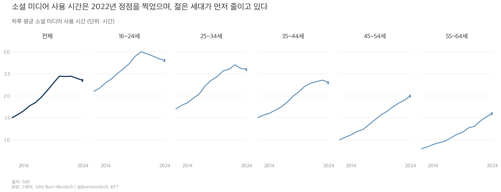
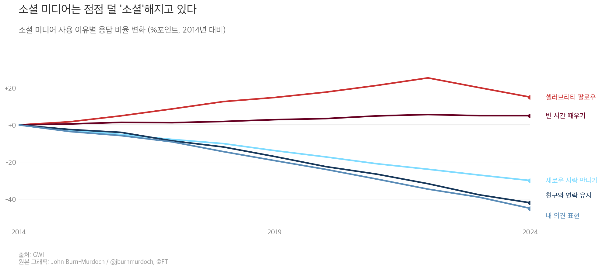
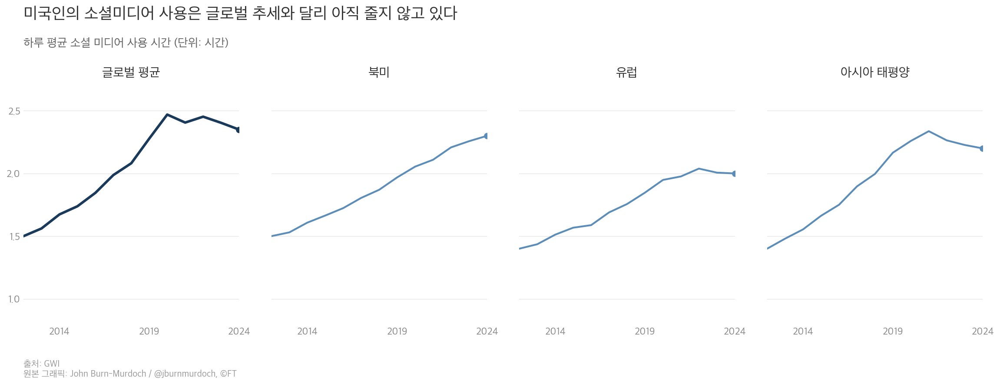

GWI 데이터에 따르면, 전 세계 소셜 미디어 하루 평균 사용 시간은 2022년 정점(약 2.5시간)을 찍고 하락세에 접어들었습니다.
16~24세가 가장 먼저, 가장 크게 사용 시간을 줄이고 있습니다. 반면 45세 이상은 아직 증가 중입니다.
소셜 미디어라는 하나의 채널이 세대별로 정반대 방향으로 움직이고 있습니다. 하나의 전략으로 전 세대를 잡는 시대는 끝났습니다.
소셜 미디어에 올인하라고?
젊은 세대는 이미 떠나고 있습니다.
소셜 미디어 사용 시간이 10년 만에 처음으로 줄어들기 시작했습니다. 마케팅 예산의 상당 부분을 소셜에 쏟고 있는 조직이라면, 지금 채널 전략을 재점검해야 합니다.
Financial Times의 John Burn-Murdoch가 50개국 이상 25만 명을 대상으로 한 GWI(Global Web Index) 데이터를 분석했습니다. 하루 평균 소셜 미디어 사용 시간이 2022년을 기점으로 하락세에 진입했습니다. 팬데믹 기간의 일시적 반등이 아니라, 10년 이상 이어진 상승 곡선 자체가 꺾였습니다. Meta와 OpenAI가 AI 생성 숏폼 비디오 플랫폼을 동시에 발표한 것도 같은 맥락입니다. 기존 소셜 미디어의 성장 한계를 인정하는 움직임입니다. (출처: GWI, Financial Times, 2025년 10월)

경영 리더가 이 데이터에서 주목할 포인트는 4가지입니다.
첫째, '소셜 미디어 성장'이라는 전제가 더 이상 유효하지 않습니다. 50개국 이상, 25만 명 대상 GWI 조사에 따르면, 2024년 말 기준 16세 이상 성인의 하루 평균 소셜 미디어 사용 시간은 2시간 20분입니다. 2022년 대비 약 10% 감소한 수치입니다. 10년간 지속된 상승 트렌드가 꺾였습니다.
둘째, 세대별 사용 패턴이 정반대 방향으로 갈라지고 있습니다. 16~24세는 하루 약 3시간에서 2.8시간으로 줄었습니다. 같은 기간 55~64세는 1.3시간에서 1.6시간으로 늘었습니다. '전 연령 대상' 소셜 미디어 전략은 어느 세대도 제대로 잡지 못하는 전략이 됩니다.
셋째, 사람들이 소셜 미디어를 쓰는 이유 자체가 달라졌습니다. '친구와 연락 유지', '내 의견 표현', '새로운 사람 만나기'를 이유로 꼽는 비율은 2014년 대비 25% 이상 하락했습니다. 반면 '빈 시간 때우기'는 오히려 증가했습니다. 소셜 미디어는 연결의 공간에서 무의식적 스크롤의 공간으로 바뀌고 있습니다.
넷째, 북미만 유일하게 사용 시간이 줄지 않았습니다. 유럽과 아시아 태평양에서는 정점 이후 하락세에 진입했지만, 북미는 2024년까지 꾸준히 상승하고 있습니다. 그 수준은 유럽보다 15% 높습니다. 극단적 콘텐츠와 AI 생성 콘텐츠가 지역별 차이를 만드는 요인입니다.


세대별, 지역별 사용 패턴 변화를 반영하지 않으면 마케팅 투자 대비 효율이 빠르게 악화됩니다.
도달률 하락은 광고비 상승으로 이어집니다. 젊은 세대의 사용 시간이 줄면 같은 노출량을 확보하는 데 더 많은 비용이 들기 때문입니다. 사용 목적이 '시간 때우기'로 바뀌면서 능동적 참여율은 더 빠르게 하락하고 있습니다.
타겟 세대를 놓치는 기회비용도 누적됩니다. 16~34세를 핵심 고객으로 삼는 브랜드가 기존 소셜 전략을 그대로 유지하면 이 세대가 실제로 시간을 보내는 채널에서 존재감을 잃게 됩니다. Meta와 OpenAI가 AI 생성 숏폼 플랫폼을 출시한 것 자체가 기존 소셜의 한계를 인정하는 신호입니다.
Meta Business Suite 또는 Google Analytics에서 최근 6개월간 연령대별 도달률·참여율 추이를 뽑습니다. 16~24세 참여율이 하락하고 있다면, 이 데이터가 자사에도 적용되고 있다는 신호입니다. (예상 30분)
16~34세 타겟 콘텐츠는 숏폼 동영상(Reels, Shorts)과 폐쇄형 커뮤니티(Discord, 카카오 오픈챗)로 이동을 검토합니다. 45세 이상 타겟은 기존 소셜(Facebook, LinkedIn) 비중을 유지합니다. (예상 1시간, 채널별 콘텐츠 배분 초안)
기존 소셜 광고 예산의 10%를 뉴스레터, 커뮤니티, AI 챗봇 등 대안 채널에 파일럿으로 투입합니다. 4주 후 전환율을 비교합니다. (예상 2시간, 파일럿 설계)
소셜 미디어 사용 시간 감소가 곧 소셜 마케팅의 종말을 의미하지는 않습니다. 사용 시간은 줄었지만, 소셜 미디어는 여전히 하루 2시간 이상 사용되는 채널입니다. 완전한 철수가 아니라 비중 조정이 핵심입니다.
GWI 데이터는 자가 보고(self-reported) 기반입니다. 실제 사용 시간과 차이가 있을 수 있습니다. 자사 데이터와 교차 검증이 필요합니다.
세대별 트렌드가 지역마다 다를 수 있습니다. 이 데이터는 글로벌 평균입니다. 한국 시장은 카카오, 네이버 등 로컬 플랫폼의 영향으로 다른 패턴을 보일 수 있습니다.
소셜 미디어 사용 시간의 정점은 지났습니다. 세대별로 갈라지는 디지털 행동을 먼저 읽는 조직이 다음 10년의 고객 접점을 선점합니다.
- Burn-Murdoch, J. (2025). "Time on social media peaked in 2022, with young people cutting back first", Financial Times, October 3, 2025. https://www.ft.com/content/a0724dd9-0346-4df3-80f5-d6572c93a863
- GWI (2025). Global social media usage data. https://www.gwi.com/